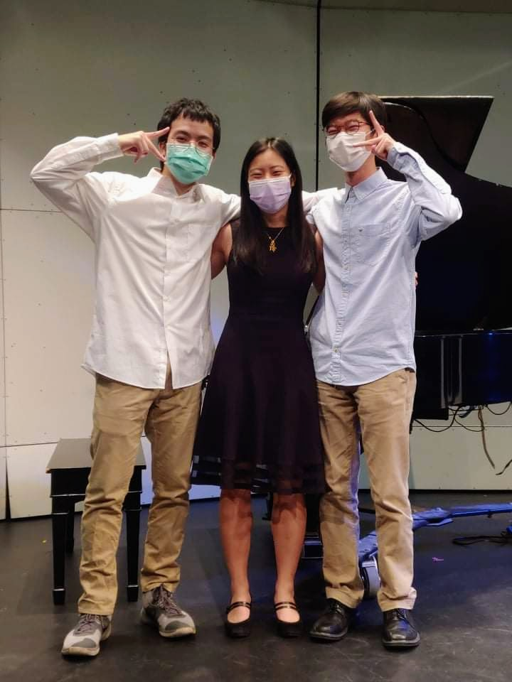
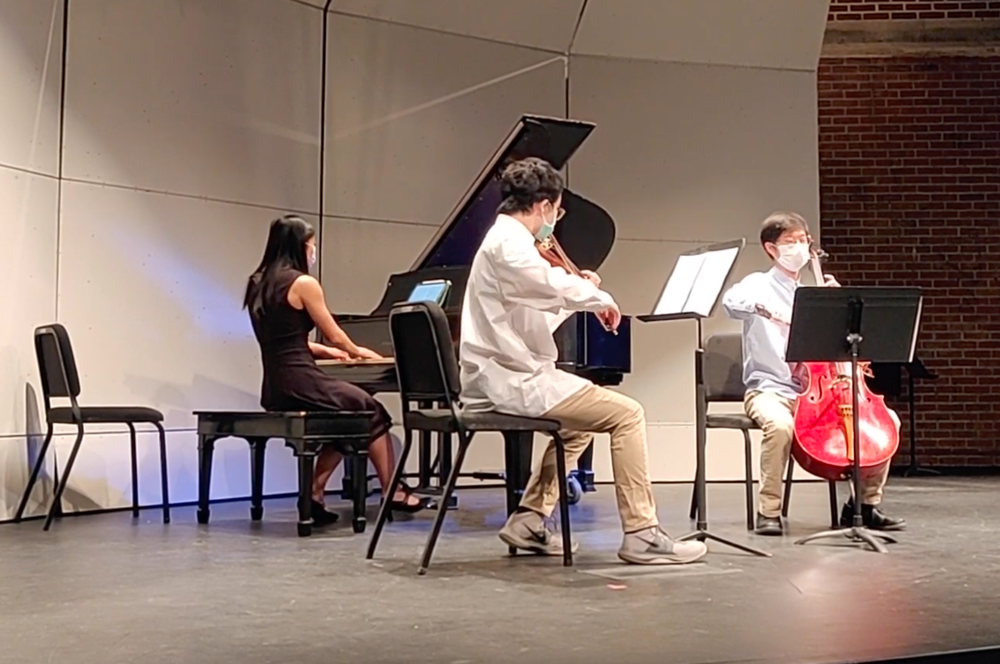
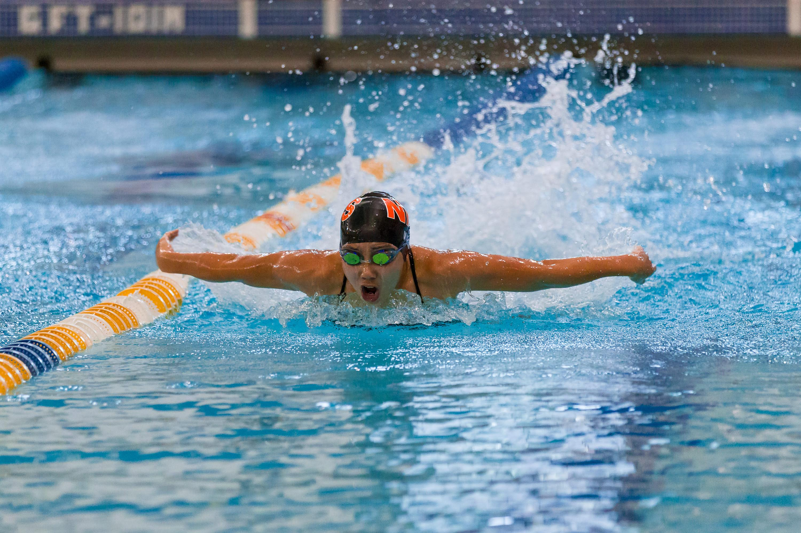
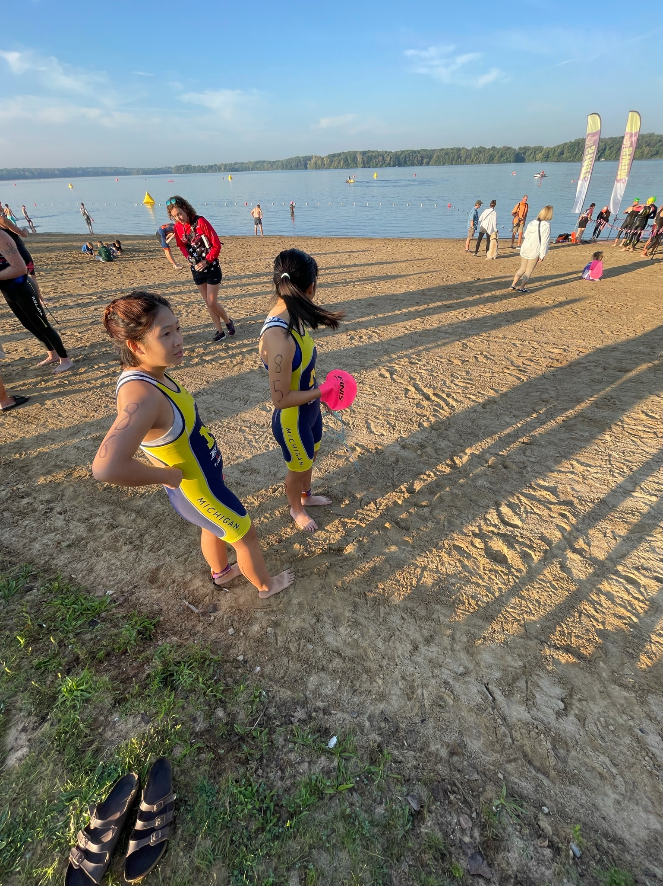
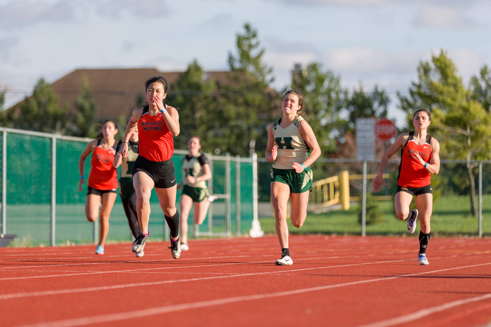
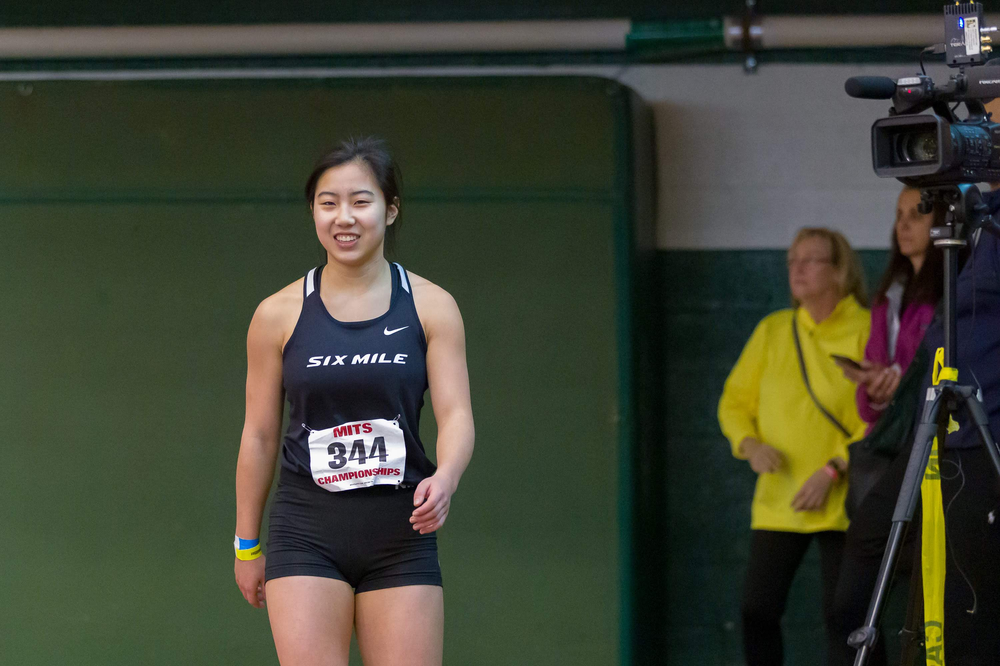
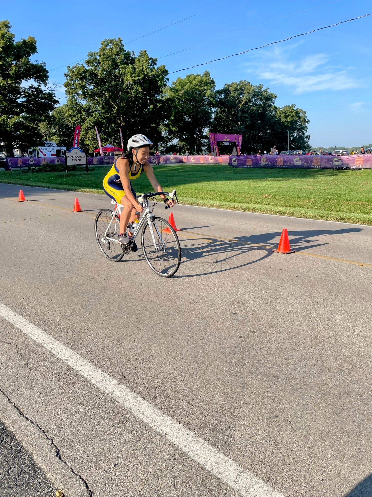
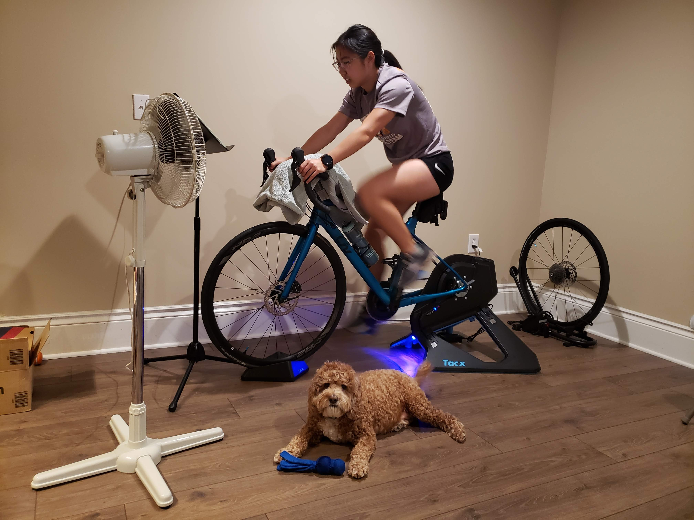

I've played piano for 16 years. I have always enjoyed performing and
some highlights include performing in a castle in Italy, performing in the
Honors Recital at the International Institute for Young Musicians, and performing
Rhapsody in Blue with my school band. I've recently started playing in a trio
and I really enjoy playing with this group.
Flute
I've always played flute for almost 10 years. I really enjoy playing in
orchestra. I always enjoy playing in the Pops Orchestra.
Sports:
Triathlon
I started doing triathlons this year and have really enjoyed it.
Swimming


I started competitively swimming since I was 8 and it has always come really
easy to me and I've really enjoyed it. Open water swimming is definitely very different
from swimming in a pool, but I'll get used to it.
Running


I have run all different distances before, however, I am usually more successful
in short sprints. I am trying to improve my endurance, since triathlon running distances
are pretty long.
Biking


I have always enjoyed biking recreationally, but I used a road bike for the first
time in my first triathlon ever and it was really fast and fun. I've gotten into biking a
lot more now and even have my own road bike.